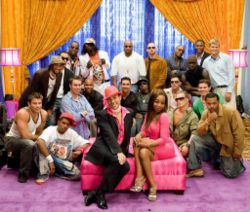

10.21.08
Posted in politics, tv at 9:18 am by danvk
I wrote a few months back about my mixed reactions to this season’s episodes of FRONTLINE. The latest is their quadrennial biography of the two presidential candidates, The Choice 2008 (also free on iTunes). It’s well worth watching.
The first half of the show, which covers McCain and Obama’s early lives, is the more interesting, or at least less familiar. Frontline did a great job of digging up old videos. There’s a recording of McCain in the POW camp. There’s a recording of Obama giving a speech at Harvard Law in 1990. He looks different, but the cadence of his speech is eerily familiar. It’s also interesting to see speeches that McCain gave in the past. He’s noticeably more relaxed than he has been in the debates. A particular standout is his exchange with John Stewart in 2006.
My main problem with the episode was its lack of depth. This was more of a problem with the latter half, where I could see the gaps in their coverage of stories with which I was already familiar. The biggest questions they asked but left unresolved related to Reverend Wright. They said it was shocking that the Clinton campaign didn’t use him against Obama until after Super Tuesday, but never offered an explanation of why. I’ve often wondered this as well. If the Reverend Wright controversy had struck before Obama was ahead in delegates, Hillary might well be the nominee.
Permalink
05.27.08
Posted in news, personal, tv at 8:35 pm by danvk
Last we spoke, I swore to not pay attention to the news for a few months. How quickly the world changes when you’re not paying attention! I walked by a TV this afternoon and heard a general saying this:
We want to capture R. Kelly, the world’s most notorious terrorist.
I know R. Kelly is bad, but the world’s most notorious terrorist? It took me a minute to realize what the quote really was:
We want to capture or kill the world’s most notorious terrorist.
What does this say about me!?
Permalink
02.27.08
Posted in news, reviews, tv at 8:00 pm by danvk
 FRONTLINE on PBS, the documentary series that takes on the tough, complicated issues and finds them… tough and complicated.
FRONTLINE on PBS, the documentary series that takes on the tough, complicated issues and finds them… tough and complicated.
It’s rare for me to watch a documentary and conclude that it undereditorialized, but that’s exactly the reaction I’ve had to the first few episodes of this season.
First we had The Medicated Child, which looked at the rapid increase in drug prescriptions for ADHD and Bipolar disorder in children. Frontline’s approach was to follow several families that had either put their children on drugs or decided not to. Each family had widely varying reactions. One family felt that the drugs prevented their child from committing suicide. Another felt that the drugs had led directly to their child committing suicide. And so on. I doubt that these cases are typical, but with only a few stories in the show, it’s difficult to get any sense of proportion. The issue of what’s caused the increase in prescriptions, the issue I found most interesting going into the show, was hardly touched.
 Then there was Growing Up Online, which purports to look at the increasingly prominent role of the internet in the lives of kids. I was really excited about this one since, unlike with most documentaries I see, I have very direct, personal experience with this issue. I was left with the distinct impression that I knew more about growing up online than the producers did. Once again, they followed a few extreme examples. One girl created an entire online world revolving around erotic, gothic pictures of herself. Another boy was driven to suicide by cyberbullying. These are interesting cases, but again, they are so rare that they throw off all sense of balance in the episode. The show was not without its strengths, however. Some of the kids had interesting perspectives on the role of the internet that I was able to relate to. And most interestingly, it showed me how growing up online has shifted since I did it. We had AIM and email when I was a kid, but most people didn’t have blogs and there was no Facebook. We had dialup. Going online was a decision. Nowadays kids have laptops, cable and wireless connections that are always on. Being online is no longer an experience, it’s just a given.
Then there was Growing Up Online, which purports to look at the increasingly prominent role of the internet in the lives of kids. I was really excited about this one since, unlike with most documentaries I see, I have very direct, personal experience with this issue. I was left with the distinct impression that I knew more about growing up online than the producers did. Once again, they followed a few extreme examples. One girl created an entire online world revolving around erotic, gothic pictures of herself. Another boy was driven to suicide by cyberbullying. These are interesting cases, but again, they are so rare that they throw off all sense of balance in the episode. The show was not without its strengths, however. Some of the kids had interesting perspectives on the role of the internet that I was able to relate to. And most interestingly, it showed me how growing up online has shifted since I did it. We had AIM and email when I was a kid, but most people didn’t have blogs and there was no Facebook. We had dialup. Going online was a decision. Nowadays kids have laptops, cable and wireless connections that are always on. Being online is no longer an experience, it’s just a given.
Finally we have Rules of Engagement, which looks at the incident in Haditha, Iraq. I was inspired to watch this by an interview with the director on On The Media, one of my favorite podcasts. Haditha is an especially thorny issue, even by FRONTLINE standards. The Marines say one thing. The Iraqi’s say something completely different. Several Marines have changed their stories, but only after being offered immunity to testify against one another. There’s essentially no physical evidence. It’s just one man’s word against another’s. I certainly feel as though I understand the Haditha situation better after watching this documentary, but I have no idea who to believe.
I guess this is a problem inherent to the documentary. Is a mere data dump valuable? Is it possible? Is it better to editorialize explicitly and make an argument, or is it better not to take sides and only incidentally present a skewed or unbalanced view.
I don’t know the answers to any of these questions, but I do know that FRONTLINE has left me wanting unqualified statements of fact. Maybe I’ll go read some math books…
Permalink
12.25.07
Posted in reviews, tv at 11:28 pm by danvk
(See also my favorite podcasts of 2007)
I’m not usually much of a TV watcher, but with shows increasingly going online, a one-hour episode can nicely fill up a shuttle ride. Without further ado, my favorite TV shows of 2007 (the bonus comes at the end):
I Love New York
(VH1)
Quick question: what’s the most commented-on post on danvk.org? It’s this one by a mile, with 74 comments and counting. Clearly danvk.org should become a Reality TV blog. After some digging, I realized that this was where all the visitors were coming from. New York was a completely hilarious show, hitting its stride about halfway through as the antics of Chance, Mr. Boston and the Stallionaires developed. I haven’t seen much of season two, but I have high hopes.
House
(FOX, Monday nights and online)
Sometime last year Gray’s Anatomy decided that medicine wasn’t interesting anymore and I started looking for a new show. Hugh Laurie could make just about anything entertaining, and the show comes up with some fun cases as well. Major style points for the Massive Attack theme song.
Frontline
(PBS, WGBH Boston)
Frontline won my affections by putting their Endgame" actually made me understand The Surge in Iraq. Almost all episodes are great, but "Hand of God", "A Hidden Life", "e;Tank Man" and "The Age of Aids" are particular favorites.
Planet Earth
(BBC and Discovery Channel)
The prettiest show you’ll ever see, this was produced to help push new HDTV’s. One of my friends bought one this year, and this series was simply breathtaking on it. The first episode, “Pole to Pole”, “Caves” and “Jungles” are my faves.
Favorite Hip-Hopera of 2007
There’s just no contest in this post’s special bonus category.
Trapped in the Closet
(R. Kelly)
I’m afraid the first five or six scenes of this ‘hopera will squelch this genre with their greatness. R. Kelly just can’t keep up the intensity, and the later episodes are just too complicated. But man are those first few scenes great! Here they are on YouTube. The South Park spoof only adds to the magic.
Permalink
09.12.07
Posted in personal, tv at 10:05 pm by danvk
Back in 2001, I was in first period French class when the planes hit. A messenger came by and told my French teacher, but evidently she decided it wasn’t significant enough to merit interrupting class. I got a confused story of what had happened by my locker after class and was glued to the TV for the rest of the school day. I didn’t tune in to the news until after the first tower had collapsed. So I missed much of the initial reaction.
I’ve always wanted to watch the TODAY show broadcast from that day, to see the initial confusion as to what happened, then the realization of what was going on after the second plane hit. I’d scoured around online a few times before, but always come up empty. So I was thrilled to see that MSNBC was showing a “minimally-edited” replay of the 9/11/2001 TODAY show last night.
Read the rest of this entry »
Permalink
« Previous entries
Next Page »